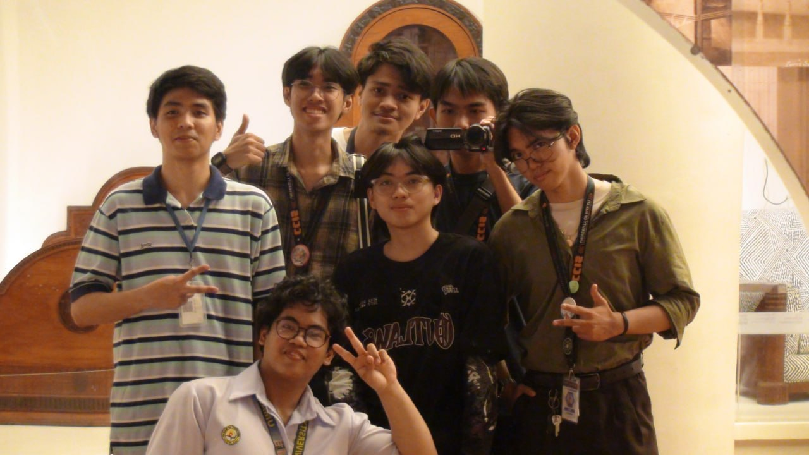
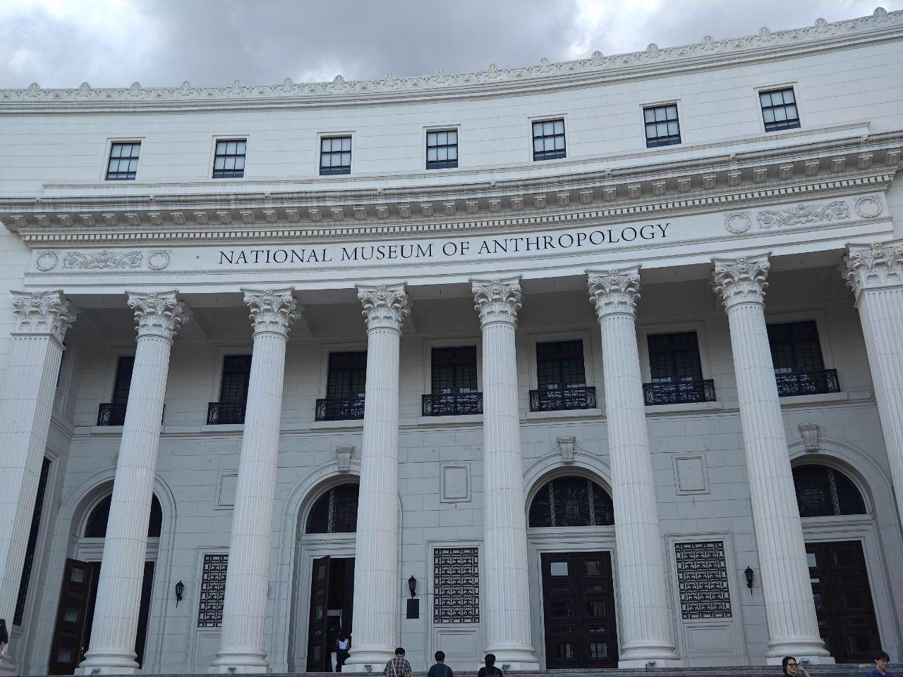
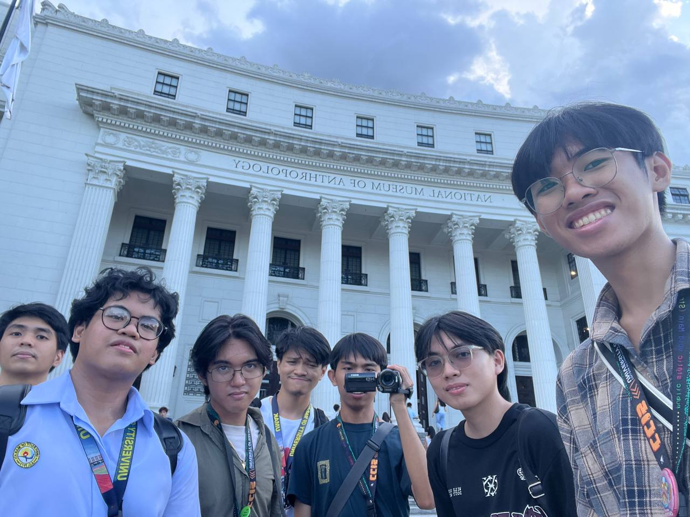
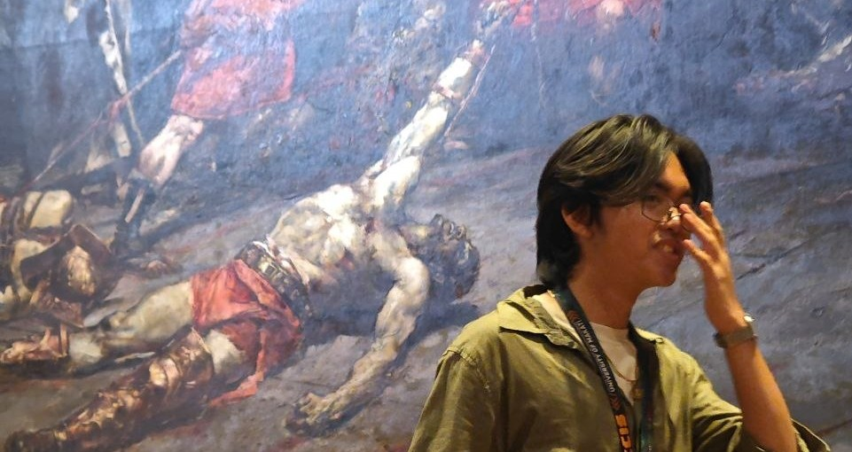
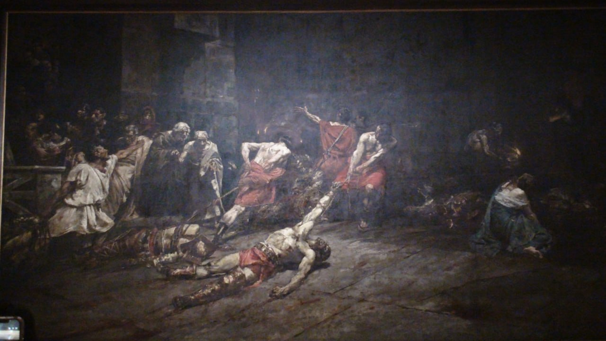
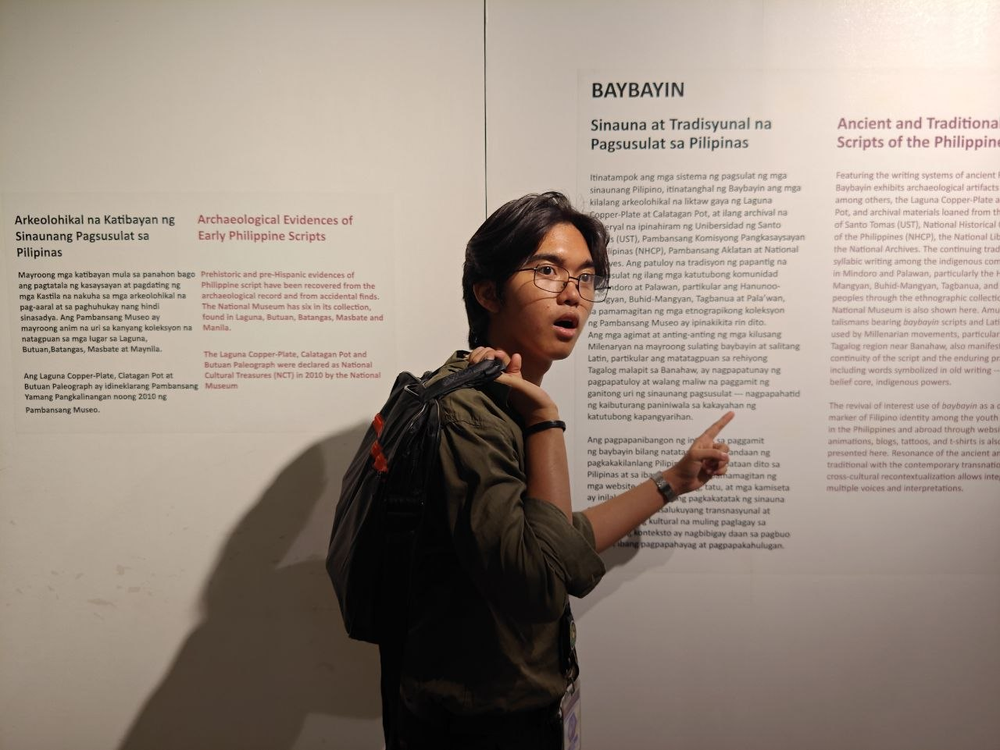
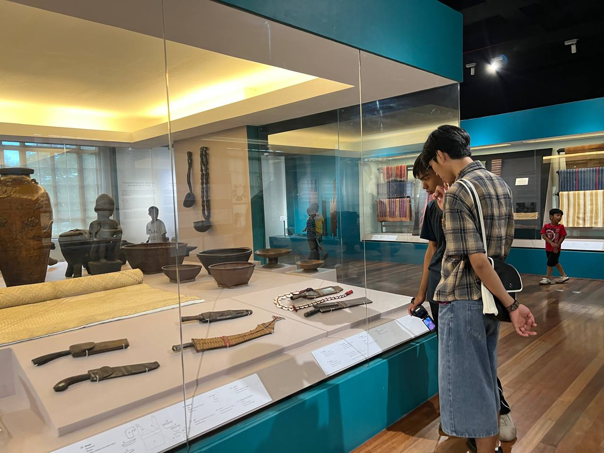
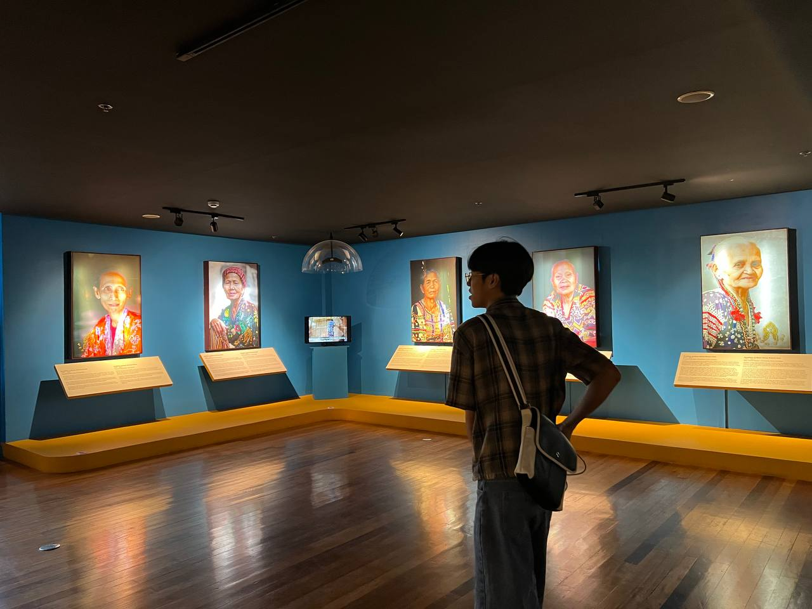
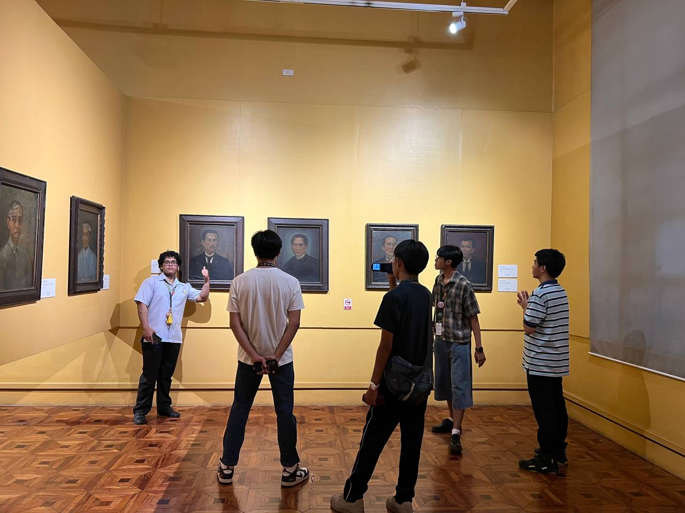

Portfolio Documentation · National Museum of the Philippines
Antido · De Vera · Detablan · Felipe · Honrado · Lapating · Vergara
Roots of the Filipino Soul
A reflective journey through the artifacts, artworks, and stories that define who
we are.
RPH Portfolio·National Museum of the Philippines·39 Exhibits Explored



01
Painting · Sculpture · Art
Canvases of Memory & Resistance
From ancient burial jars to revolutionary paintings — Filipino art as witness,
testimony, and protest.

Metal Age · ~5 BC – AD 370
The Sculpted Faces of the Dead — Maitum Jars
Workers discovered these earthenware burial jars in 1991 inside Ayub Cave,
Maitum, Sarangani Province. Archaeologists date them to the Metal Age, roughly 5 BC to AD 370. Each
lid is sculpted into a human face. Researchers believe each face represents the specific person
buried inside.
Source: Neri, C. & Acabado, S. (2018). "The Maitum Anthropomorphic Pottery."
Asian Archaeology, 2(1), 45-60. National Museum of the Philippines, Anthropology Division.
These jars prove that pre-colonial Filipinos produced sophisticated art. They show a society
with organized beliefs about death and the afterlife. The craftsmanship, achieved without
outside influence, reflects mastery of pottery technique over 2,000 years ago. These are
among the oldest confirmed examples of portrait sculpture in Southeast Asia.
You stand in front of these jars and you see faces. Real faces, shaped by hands that lived
thousands of years before you. That detail is difficult to ignore. The Philippine story did
not start with foreign ships arriving in 1521. It was already in motion in the caves of
Sarangani.
Colonial Era · 1719
The Assassination of Governor Bustamante
Felix Resurreccion Hidalgo painted this work depicting the 1719 murder of
Spanish Governor-General Fernando Manuel de Bustamante. A mob, led by friars, stormed the Palacio
del Gobernador and killed him. The event documented a direct conflict between the Church and the
colonial state.
Source: Javellana, R. (1997). "Art and the Colonial Church in the Philippines."
Philippine Studies, 45(2), 153-180. Ateneo de Manila University Press.
This painting shows you who held real power in colonial Philippines. The Catholic Church
operated with authority that exceeded the crown's appointed officials. Friars committing
public violence against a governor is not a minor incident. It tells you that religious
institutions in this era were political forces, not spiritual ones alone.
The violence in this painting is hard to look at, especially because the attackers wear
robes. Your image of colonial religion gets complicated here. This exhibit asks you to look
at history without softening it. Preserving an uncomfortable truth is more valuable than a
comfortable myth.

1884 · National Consciousness
Spoliarium — Detail View
Juan Luna completed this painting in 1884. It won the First Gold Medal at
the Exposicion Nacional de Bellas Artes in Madrid. The scene shows dead gladiators being stripped
and dragged from the Roman Colosseum floor. Jose Rizal publicly identified it as a portrait of
Filipino life under Spanish rule.
Source: Luna, J. (1884). Spoliarium [Oil on canvas]. National Museum of
Fine Arts, Manila. Rizal, J. (1884). Toast at banquet honoring Juan Luna and Felix Resurreccion
Hidalgo, Madrid.
Luna painted Rome but spoke about the Philippines. Rizal understood the message immediately
and said so in a public speech. This canvas measures 4.22 by 7.67 meters. Its size alone
commands attention. The argument it makes is precise: colonial subjects are stripped of
dignity and dragged through systems that profit from their suffering.
You do not need to know art history to feel this painting. The bodies on the ground and the
figures stepping over them communicate something direct. Luna chose allegory because direct
protest was not safe. You are looking at an act of courage formatted as a painting.
1947 · Battle of Manila
Echoes of the Occupation — "Rape and Massacre in Ermita"
Diosdado Lorenzo painted this in 1947. It records events from February
1945, when retreating Japanese forces killed tens of thousands of civilians in Manila, including the
Ermita district. Historians estimate between 100,000 and 240,000 Filipino civilians died during the
Battle of Manila.
Source: Connaughton, R., Pimlott, J., & Anderson, D. (1995). The Battle for
Manila. Presidio Press. Guillermo, A. (2009). Historical Dictionary of the
Philippines. Scarecrow Press.
Lorenzo did not paint soldiers or strategy. He painted victims. This is a deliberate choice.
The Battle of Manila killed more Filipino civilians than any other single event in World War
II in Southeast Asia. This painting records what official military histories often leave
out: the cost paid by ordinary people.
The streets in this painting are familiar streets. This happened to people whose
grandchildren are alive today. When you look at this work, you are not looking at distant
history. You are looking at a wound that this country has not fully processed.
Bert Monterona · Mindanao
"Mindanao Historical Struggle"
Bert Monterona created this large-format work to document the history of
resistance in the southern Philippines. Lumad and Moro communities in Mindanao and Sulu resisted
Spanish colonization continuously from the 16th through the 19th century. Spain never achieved full
control over the region.
Source: Majul, C.A. (1999). Muslims in the Philippines (3rd ed.).
University of the Philippines Press. Warren, J.F. (2002). The Sulu Zone. New Day
Publishers.
Most Philippine history textbooks focus on Luzon. This artwork corrects that imbalance. The
Sultanates of Maguindanao and Sulu were organized states with legal systems, trade networks,
and military capacity. They held off a colonial power for over 300 years. That record of
resistance belongs in your understanding of Filipino identity.
This work uses color aggressively. The figures stand with posture that signals pride, not
defeat. If your picture of Philippine history centers only on surrender and colonization,
this artwork adds data you were missing.
Maranao Okir · Lanao
Maranao Okir and the Sarimanok
This display shows carved beams called Panolong and ritual objects from
the Maranao people of Lanao. The Sarimanok is a rooster figure from Maranao oral tradition,
associated with nobility and fortune. These objects originally decorated the Torogan, the residence
of Maranao royalty.
Source: Casal, G., et al. (1981). The People and Art of the Philippines.
Museum of Cultural History, UCLA. Orosa-Goquingco, L. (1980). The Dances of the Emerald
Isles. Ben-Lor Publishers.
Okir is a design system, not decoration. The curving lines and geometric forms follow strict
conventions developed over centuries. Maranao art connects to broader Islamic art traditions
across Southeast Asia. These carvings show that the Philippines participated in a regional
civilization that stretched from Mindanao to Indonesia and Malaysia.
The curves in these carvings move. Your eye follows them from one end of the beam to the
other. This is intentional design. The Maranao people built a visual language that carried
meaning about status, faith, and ancestry. Your national identity includes this.
"Our cultural heritage is as much about our capacity to create profound art as it is about our
resilience."
02
Scripts · Documents · Writing
The Written Word Before the West
Ancient scripts, sacred texts, and legal documents that prove Filipinos were
never without a written voice.

Pre-Colonial · Baybayin
"Baybayin: Records of the Tagalog Alphabet"
Baybayin is an indigenous writing system of the Philippines. Spanish
missionaries documented and codified it after 1565 for use in religious texts. Filipinos used this
script for personal writing, trade, and communication before and after contact with Spain. It
belongs to the Brahmic family of scripts.
Source: Diringer, D. (1968). The Alphabet: A Key to the History of Mankind.
Funk & Wagnalls. Postma, A. (1992). "The Laguna Copper-Plate Inscription." Philippine
Studies, 40(2), 182-203.
These plates record a writing system that existed before colonization. Baybayin proves that
the Philippine archipelago had a literate population before 1521. Spanish officials noted in
their own reports that Filipinos wrote letters and documents regularly. This is not a
colonial gift. It is a pre-existing technology.
Look at the characters on these plates. Your ancestors built a system for turning sound into
symbols. That system worked well enough that Spanish missionaries studied and adopted it to
reach Filipino readers. Your people were writing long before anyone arrived to teach them.
1593 · Dominican Order
"Doctrina Christiana" (1593)
The Dominican Order printed this book in Manila in 1593 using the
xylographic method, pressing carved wooden blocks onto paper. It contains the Lord's Prayer, Hail
Mary, and Ten Commandments in Spanish and Tagalog, with portions in Baybayin script. It is the first
book printed in the Philippines.
Source: Medina, J.T. (1896). La Imprenta en Manila desde sus Origenes hasta
1810. Imprenta Elzeviriana. Retana, W.E. (1899). Aparato Bibliografico de la Historia
General de Filipinas. Sucesores de Rivadeneyra.
This book marks the beginning of Philippine print history. The inclusion of Baybayin script
in the 1593 edition tells you something important: missionaries knew they needed to meet
Filipino readers on their own terms. Printing a bilingual book in an indigenous script is
evidence of a pre-existing literate culture that colonizers had to acknowledge.
This small book changed the religious identity of a nation. Over 80 percent of Filipinos
identify as Catholic today. That number connects directly back to documents like this one.
You are looking at the starting point of a cultural shift that shaped your country's
present.
900 AD · Crown Jewel
"The Laguna Copperplate Inscription"
A worker found this copper plate in 1989 near Laguna de Bay. Scholar
Antoon Postma deciphered it in 1992. The text, dated April 21, 900 AD, records the legal pardon of a
man named Namwaran from a debt of gold owed to the Chief of Tondo. It is written in Kavi script and
uses Old Malay, Sanskrit, Old Javanese, and Old Tagalog.
Source: Postma, A. (1992). "The Laguna Copper-Plate Inscription: Text and
Commentary." Philippine Studies, 40(2), 182-203. Scott, W.H. (1994). Barangay:
Sixteenth Century Philippine Culture and Society. Ateneo de Manila University Press.
This plate pushed the documented history of the Philippines back by 600 years. It records a
formal legal transaction involving gold, a named individual, and a political authority in
Tondo. It shows four languages in one document, which tells you this society had active
trade and diplomatic contact with neighboring kingdoms in 900 AD.
The Laguna Copperplate is the oldest written document found in the Philippines. It records a
debt, a pardon, and a name. Those are ordinary human concerns. Your ancestors in 900 AD had
legal systems, economic structures, and bureaucratic records. This plate proves it.
Late 15th–16th Century · Masbate
"Batong Monreal" — The Monreal Stones
Workers discovered these limestone tablets in 2011 at a school site on
Ticao Island, Masbate. Researchers dated them to the late 15th or early 16th century. The tablets
carry Baybayin inscriptions. Their discovery at a school site suggests writing was part of community
education outside Luzon.
The Monreal Stones confirm that Baybayin spread beyond Luzon before Spanish contact. Finding
them at a school site specifically challenges the assumption that literacy belonged only to
elites. Writing was taught in communities across the archipelago. These stones are physical
proof of that.
These tablets were found at a school. That detail matters. Writing was not reserved for
chiefs or priests in pre-colonial Philippines. Your ancestors built communities where
ordinary people learned to read and write. The stones from Masbate show you that.
1896 · Rizal's Last Gift
De la Imitación de Cristo — Rizal's Copy
On the morning of December 30, 1896, Jose Rizal gave this book to
Josephine Bracken before his execution at Bagumbayan. He wrote inside: "To my dear and unhappy wife,
Josephine. December 30th, 1896. Jose Rizal." Josephine Bracken was his common-law wife. He had
married her in a civil ceremony weeks earlier.
Source: Guerrero, L.M. (1963). The First Filipino: A Biography of Jose
Rizal. National Historical Commission of the Philippines. Craig, A. (1913). Lineage,
Life and Labors of Jose Rizal. Philippine Education Company.
Rizal wrote two words you do not expect: "unhappy wife." He did not write a heroic
dedication. He wrote an honest one. This book records a private moment that no speech or
novel captures. It tells you Rizal was a man who understood the cost of his choices on the
people close to him.
Most exhibits show you Rizal the genius or Rizal the martyr. This book shows you Rizal the
husband, writing to a woman he was about to leave behind. That honesty in two words,
"unhappy wife," tells you more about his character than any monument does. Preserving this
protects the full record.
"Our ancestors didn't need paper to be civilized — they used the very earth beneath them to preserve
their language."
03
Tools · Vessels · Technology
Technology Born from the Earth
Spears, baskets, cannons, and bamboo vessels — the engineering genius woven into
everyday Philippine life.

Hanunoo-Mangyan · Oriental Mindoro
"Apugen and Luka" — Bamboo Love Letters
The Hanunoo-Mangyan of Oriental Mindoro use bamboo containers called
Apugen (lime holders for betel nut) and Luka (tobacco containers) for courtship. Young men carve
messages in Surat Mangyan script onto the bamboo and give them to women they are pursuing. The
Hanunoo-Mangyan are one of the few groups that still actively use a pre-colonial Philippine script
today.
Source: Conklin, H.C. (1953). "Hanunoo-English Vocabulary." University of
California Publications in Linguistics, 9. UNESCO. (1999). "Hanunuo Mangyan Script." Memory
of the World Programme Register.
UNESCO added Hanunuo Mangyan script to its Memory of the World register in 1999. That
recognition confirms its global significance. This script, carved onto bamboo for personal
communication, is a living tradition. The Hanunoo-Mangyan did not abandon it under colonial
pressure. That continuity over centuries is a specific, documented achievement.
A bamboo tube with carved script is also a love letter. That combination of literacy and
personal connection tells you something about how this community integrated writing into
daily life. Writing was not formal or distant for the Hanunoo-Mangyan. It was personal.
Ifugao · Cordillera
"Traditional Ifugao Agricultural Tools"
This display shows the Ga-ud (spade variants), harvesting knives, the
Pasiking (back basket), and storage containers called Labba. The Ifugao built the Banaue Rice
Terraces over 2,000 years ago without metal tools or modern engineering. UNESCO declared the
terraces a World Heritage Site in 1995.
Source: UNESCO World Heritage Centre. (1995). "Rice Terraces of the Philippine
Cordilleras." WHC Nomination File No. 722. Acabado, S. (2017). "The Archaeology of the Ifugao
Agricultural Terraces." Journal of World Prehistory, 30(3), 253-280.
The Ifugao built a 2,000-year-old irrigation system using these tools. The system covers over
10,000 square kilometers of terraced fields. Modern engineers have studied it and confirmed
that its water management principles remain valid today. These worn blades and woven baskets
are what that achievement looked like at ground level.
Every tool in this display has a specific function tied to a specific terrain problem. The
Ga-ud angle suits wet, clayey terrace soil. The Pasiking distributes weight for steep
mountain paths. Your ancestors solved engineering problems without external help. These
tools are the evidence.
Maranao · Maguindanao · Tausug
"The Lantaka" — Bronze Swivel Cannons
Lantaka are bronze swivel cannons produced by the Maranao, Maguindanao,
and Tausug peoples of Mindanao and the Sulu Archipelago. Local smiths cast them before and during
the Spanish colonial period. Warriors mounted them on Karakoa warships for naval combat. Many carry
carved Okir patterns on the barrel.
Source: Borja, M.V. (2005). "The Lantaka and Maritime Defense in the Sulu Zone."
Kinaadman: A Journal of the Southern Philippines, 27(1). Warren, J.F. (2002). The Sulu
Zone 1768-1898. New Day Publishers.
The Lantaka is a locally manufactured weapon. It is not an imported technology. Sulu and
Maguindanao smiths produced bronze cannons in quantity before Spanish forces arrived in the
south. The swivel mount allows fast repositioning on a moving vessel. That design choice
shows tactical thinking, not primitive production.
You are looking at a weapon that kept Spanish forces out of Mindanao and Sulu for over 300
years. That outcome is specific and documented. The Sultanates of the south were not
conquered during the entire Spanish colonial period. These cannons are part of the reason
why.
National Ethnographic Collection
"Indigenous Weaponry and Trapping Technology"
This display shows hunting and combat tools from the Aeta, Ifugao, and
Lumad communities: Sibat (spears), Pana (arrows), Busog (bows), and assorted animal traps. Each
group adapted materials from their specific environment. Aeta communities in particular are
documented as among the most accurate archers in Philippine history.
Source: Griffin, P.B. (1984). "Forager Resource and Land Use in the Humid Tropics."
In Past and Present in Hunter-Gatherer Studies. Academic Press. National Museum of the
Philippines Ethnology Division Collection Records.
Each tool in this case reflects knowledge of local materials. Aeta archers selected bamboo
species based on flexibility and snap strength. Trap mechanisms use tension, balance, and
trigger timing. These are applied physics. The people who built these tools understood
material properties through direct experimentation over generations.
A bird snare that works depends on precise calibration of weight and trigger sensitivity.
Your ancestors built these without manuals or formal training institutions. They built them
through observation and practice. The tools in this case are the products of serious
technical knowledge.
04
Indigenous Peoples · Living Heritage
The Living Roots of the Filipino Soul
From the Ifugao Bulul to the GAMABA masters — the indigenous communities who
kept Philippine culture alive.

Ifugao · Cordillera Mountains
"The Ifugao Bulul" — Guardian of the Rice Granary
The Bulul is a carved wooden figure central to Ifugao ritual life. Carvers
use premium hardwoods such as narra or ipil. Priests ritually activate the figure before placing it
inside a rice granary. The dark surface patina comes from years of contact with animal blood and
smoke during ritual ceremonies.
Source: Lambrecht, F. (1967). "Ifugaw Sculptures." Folklore Studies, 26(1),
1-142. Barton, R.F. (1938). Philippine Pagans: The Autobiographies of Three Ifugaos.
Routledge.
The Bulul uses geometric reduction, not anatomical detail. This is a deliberate artistic
choice rooted in Ifugao theology. The figure is not symbolic of a deity from a distance. It
functions as a physical residence for an ancestral spirit during agricultural rituals. The
carving, the ritual, and the harvest are parts of one connected system.
For the Ifugao, this figure was not decoration. It was a participant in the agricultural
process. Their worldview treated the spirit realm and the physical world as connected
systems. The Bulul shows you a cosmology where human effort and ancestral support worked
together to produce a harvest.
Ethnographic Documentation
"The Faces of the Filipino Ancestry"
This photographic collection documents communities from Mindanao,
including the T'boli, Bagobo, and Manobo, alongside Cordilleran groups. These communities maintained
distinct cultural practices through the Spanish and American colonial periods. The T'boli are known
globally for T'nalak cloth, a hand-woven fabric made from abaca fiber using a resist-dyeing
technique.
Source: Casal, G., et al. (1981). The People and Art of the Philippines.
Museum of Cultural History, UCLA. Cole, F.C. (1913). The Wild Tribes of Davao District,
Mindanao. Field Museum of Natural History.
T'boli T'nalak cloth takes months to produce. Each design follows patterns tied to specific
clans and occasions. The T'boli say the designs come from dreams. In practice, a master
weaver spends years memorizing a visual vocabulary that functions as a social record. The
textile is a document.
The faces in this collection belong to communities that chose continuity over assimilation.
They did not abandon their languages, textiles, or rituals under colonial pressure. Your
national identity includes people who held their ground for centuries. These photographs
show you who they are.
GAMABA · Republic Act 7355
"The GAMABA National Living Treasures" Gallery
Republic Act 7355, signed in 1992, established the Gawad sa Manlilikha ng
Bayan (GAMABA). The award recognizes Filipino citizens who preserve and transmit traditional art
forms of their communities. Recipients include Lang Dulay for T'nalak weaving, Samaon Sulaiman for
Kutyapi music, and Magdalena Gamayo for Inabel weaving.
Source: Republic Act No. 7355 (1992). An Act Creating the Order of National Artists.
Republic of the Philippines. National Commission for Culture and the Arts. (2020). GAMABA: Gawad
sa Manlilikha ng Bayan Awardees. NCCA Publications.
GAMABA awardees are formally recognized as national treasures under Philippine law. The award
acknowledges that intangible cultural heritage, skills passed from person to person, is as
significant as physical artifacts. Each awardee represents a tradition that survives because
one person chose to carry it forward and teach it.
Each portrait in this gallery represents decades of practice and transmission. These masters
did not keep their knowledge to themselves. They taught it. The government formalized that
contribution in law. You are looking at people the state identified as essential to the
nation's cultural survival.
GAMABA 2012 · Ilocos
"Manlilikha ng Bayan: Magdalena Gamayo"
Magdalena Gamayo was born in 1924 in Pinili, Ilocos Norte. She began
learning Inabel weaving at age 16 on a traditional wooden loom. She received the GAMABA award in
2012 for her mastery of complex Inabel patterns, including the Binakol and Inuritan designs. Inabel
is the traditional hand-woven cloth of the Ilocos region.
Source: National Commission for Culture and the Arts. (2012). "GAMABA 2012 Awardee:
Magdalena Gamayo." NCCA Official Records. Dacquel, L. (2013). "The Weavers of Ilocos."
Philippine Quarterly of Culture and Society, 41(2).
Gamayo's Binakol pattern requires the weaver to calculate thread sequences without written
notes. The finished cloth produces an optical illusion of moving concentric squares. She
achieved this through memorization and practice over decades. Her work meets the standard of
any technical discipline that requires years of training to perform at expert level.
Nana Magdalena learned this craft at 16 and spent over seven decades perfecting it. The
Binakol pattern she produces by memory, with no written guide, takes months to finish. You
are looking at what mastery looks like in a tradition that does not get taught in schools.
Her craft is precise, technical, and irreplaceable.
"To be 'modern' doesn't mean we have to abandon our roots. These indigenous cultures are the soul of
the Philippines."
05
Political History · Known Figures
The Architects of the Republic
Revolutionaries, orators, and statesmen — the faces of those who fought for
Filipino sovereignty.

Bust · Father of the Revolution
Bust of Andres Bonifacio — The Supremo
Andres Bonifacio founded the Katipunan in 1892 with a group of
working-class Manilenos in Tondo. He served as its Supremo, or supreme leader. On August 23, 1896,
he led the Cry of Pugadlawin, launching the Philippine Revolution against Spain. Bonifacio had no
formal university education. He educated himself through books he borrowed and bought.
Source: Ileto, R. (1979). Pasyon and Revolution: Popular Movements in the
Philippines, 1840-1910. Ateneo de Manila University Press. Agoncillo, T. (1956). The
Revolt of the Masses: The Story of Bonifacio and the Katipunan. University of the
Philippines Press.
Bonifacio organized a mass movement from the urban poor of Manila. The Katipunan grew from a
handful of members in 1892 to an estimated 400,000 by 1896. He did this without wealth,
formal education, or the patronage networks available to the Ilustrado class. His model of
organizing was bottom-up and community-based.
Bonifacio built a revolution from the ground up without the advantages of money or education.
He read what he could find and organized people who had nothing to lose. The bust in this
exhibit captures a face that history treated badly both before and after his death. He
deserves your attention.
Lithograph · Ilustrado Movement
"Filipinos Ilustres" — The Enlightened Ones
This lithograph records members of the Ilustrado reform movement of the
late 19th century. The group includes Jose Rizal, Marcelo H. del Pilar, Graciano Lopez Jaena, and
Antonio Luna. They published La Solidaridad, a newspaper based in Spain, from 1889 to 1895. Through
it, they pushed for political representation and equality under Spanish law.
Source: Schumacher, J. (1997). The Propaganda Movement: 1880-1895. Ateneo
de Manila University Press. Anderson, B. (1998). The Spectre of Comparisons: Nationalism,
Southeast Asia and the World. Verso.
La Solidaridad ran for six years and published arguments for Filipino political rights in the
language of European liberal democracy. The Ilustrados understood that the most effective
way to challenge colonial authority in the 1880s was to use the colonial power's own legal
and philosophical framework against it. That strategy was deliberate and precise.
These men did not pick up weapons in the 1880s. They picked up pens and published a newspaper
in Spain. They argued for your rights in the language of their oppressors, on the
oppressors' own ground. That approach required discipline, intelligence, and courage of a
specific kind.
Commonwealth · 1935–1946
"Statue of Manuel L. Quezon" — Father of the National Language
Manuel L. Quezon became the first president of the Commonwealth of the
Philippines in 1935. He signed Executive Order No. 134 in 1937, establishing Tagalog as the basis of
the national language. He also established the Institute of National Language that year to develop
and standardize Filipino. He died in exile in 1944 while fighting continued in the Philippines.
Source: Quirino, C. (1990). Quezon: Paladin of Philippine Freedom.
Filipiniana Book Guild. Executive Order No. 134 (1937). Establishing the National Language of the
Philippines. Commonwealth of the Philippines.
Quezon's 1937 executive order created the legal basis for a Filipino national language. That
decision had long-term consequences for education, governance, and cultural identity. He
governed during one of the most complex periods in Philippine history, managing a transition
to self-governance while under American oversight and then Japanese occupation.
Quezon died in New York in 1944, still the Commonwealth president, still fighting for a
country under occupation. He did not surrender his title or abandon his government. The
language you speak today connects directly to the executive order he signed in 1937. His
decisions still shape your daily life.
Sketch Studies · Pedro V. Coniconde
"Study for Portraits of Rizal, Bonifacio, and Aguinaldo"
Pedro V. Coniconde (1901-1974) produced these preparatory portrait studies
of three central figures in Philippine history: Jose Rizal, who led through writing; Andres
Bonifacio, who organized the mass revolution; and Emilio Aguinaldo, who declared independence on
June 12, 1898, and served as the first president of the Philippine Republic.
Source: Zialcita, F. & Tinio, M. (1997). Philippine Ancestral Houses.
GCF Books. National Museum of Fine Arts. Coniconde Collection, Permanent Gallery Records.
These three figures represent three distinct approaches to the same goal. Rizal used
literature and public argument. Bonifacio used mass organizing and armed resistance.
Aguinaldo used military command and formal statecraft. Philippine independence required all
three methods. No single approach was sufficient.
Coniconde drew these as studies, working out how to capture each man before committing to a
larger canvas. You see each subject at the thinking stage, not the finished product. Rizal
reads as careful. Bonifacio reads as direct. Aguinaldo reads as deliberate. Three portraits,
three strategies, one country.
Third Republic · Portraits
"Statesmen of the Commonwealth and Beyond"
This display shows formal oil portraits of Marcelo H. del Pilar, Manuel A.
Roxas, and Sergio Osmena. Roxas became the last Commonwealth president and the first president of
the independent Third Philippine Republic on July 4, 1946. Osmena preceded him, assuming the
presidency after Quezon died in 1944. Del Pilar led the Propaganda Movement's most radical faction
from Spain.
Source: Agoncillo, T. & Alfonso, O. (1967). History of the Filipino
People. Malaya Books. Cullather, N. (1994). Illusions of Influence: The Political
Economy of United States-Philippines Relations. Stanford University Press.
Roxas governed a country physically destroyed by war. Manila in 1945 was the second most
devastated city in World War II after Warsaw. Osmena managed the government in exile while
enemy forces occupied the homeland. These portraits show men who administered a state under
conditions of extreme pressure and loss.
These three men governed during the period that produced the Philippines you live in today.
Del Pilar built the intellectual foundation for reform. Osmena held the government together
through occupation. Roxas received formal independence. Your country exists as a republic
because of decisions they made under conditions most people will never face.
Carrying the Story Forward
The National Museum of the Philippines holds physical proof that Filipino civilization did not begin in
1521. The Maitum Jars date to 5 BC. The Laguna Copperplate records a legal transaction from 900 AD.
The Bulul figures show a theology tied to agriculture and community. These are documented facts, not
interpretations.
Seeing these objects in person changes how you process the information. You read about the Maitum Jars
in a textbook and you get a description. You stand in front of them and you see faces. That difference
matters. Direct contact with primary sources produces a different kind of understanding than reading
summaries.
The exhibits in this museum also show you that Filipino resistance took many forms. Bonifacio organized
workers. The Ilustrados published newspapers. The Sultanates of the south built cannons and held
territory for three centuries. No single story covers all of it. Your national history is broader than
any single textbook chapter.
As students, we believe schools should bring students to places like this regularly. A photograph of
the Spoliarium and a 4.22 by 7.67 meter canvas are not the same experience. Policy arguments for
cultural preservation are stronger when the people making them have actually seen what they are
preserving.
Your identity as a Filipino connects to specific objects, specific people, and specific dates. This
museum holds many of them. The work of preserving that record belongs to every generation that
inherits it, including yours.